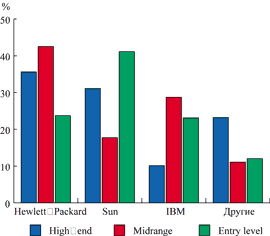
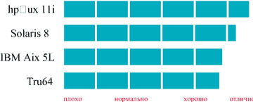

Андрей Ездаков
Бурный рост информационной инфраструктуры делового мира, активное использование глобальных коммуникаций, новых сервисов и технологий работы с данными - все это не только способствовало ускорению и совершенствованию бизнес-процессов, но и привело к возникновению ряда проблем, ранее не существовавших или бывших не столь острыми. В числе таких проблем можно назвать обеспечение совместимости между разнородными программными продуктами и форматами данных, информационной безопасности и управляемости сложной инфраструктуры информационных систем.
Значительное число серверов информационных систем сегодня работают под управлением операционной системы Unix. Разные варианты этой ОС доказали свои преимущества по многим важным параметрам - надежности, масштабируемости, доступности и управляемости. Поэтому перед пользователями зачастую встает задача выбора одного из многочисленных вариантов Unix. По данным компании IDC, чаще всего этот выбор делается в пользу ОС HP-UX компании Hewlett-Packard (http://www.hp.com), особенно в системах среднего и высокого уровня.
|  | Рис. 1. Какую ОС выбирают пользователи Unix-серверов различных классов (данные IDC, ноябрь 2002 г.).
|
Современная вычислительная среда
Специалисты компании Hewlett-Packard рассматривают вычислительную среду современной информационной системы предприятия как трехслойное образование с различными требованиями к ресурсам.
Первый слой - уровень взаимодействия автоматизированной системы с Интернетом. Сюда входит межсетевой экран и, возможно, специальные серверы балансировки нагрузки и кэширования, которые облегчают и оптимизируют работу пользователей. Этот слой предъявляет особенно высокие требования к информационной безопасности для предотвращения несанкционированного доступа из общедоступной сети во внутреннюю сеть компании.
Во втором, пограничном, слое размещаются серверы Web, ftp и VPN (virtual private network). Здесь, как правило, находится множество параллельно работающих небольших серверов. Одним из основных требований, предъявляемых к этому слою, становится возможность легкого наращивания ресурсов путем горизонтального добавления дополнительных аппаратных ресурсов.
Третий слой - внутренняя вычислительная сеть компании, построенная по интранет-технологии. Здесь функционируют серверы приложений и баз данных и, как правило, используется мощное аппаратное обеспечение - высокопроизводительные серверы, которые обрабатывают запросы пользователей и транзакции, обслуживают приложения и обеспечивают пользователям доступ к файлам и базам данных. Этот слой расширяется вертикально - путем увеличения производительности, а не за счет добавления новых компьютеров.
С учетом этих соображений в 2001 г. Hewlett-Packard разработала новую версию своей известной ОС - HP-UX 11i. Эта система ориентирована на более эффективную поддержку работы пользователей в среде Интернета. В HP-UX 11i предусмотрены возможности оперативной замены и добавления карт ввода-вывода, усовершенствована поддержка механизма кэширования (CacheFS). Наряду с поддержкой файловой системы Veritas (JFS 3.3) имеется совместимость с файловой системой NFS (Network File System) по протоколу TCP/IP. В новой версии также усовершенствованы функции, связанные с системным управлением, обеспечением безопасности и предотвращением несанкционированного доступа, настройкой производительности SMP-конфигураций (они могут включать до 64 процессоров). Новая ОС выпускается для двух аппаратных платформ - PA-RISC и Intel Itanium; в состав версии для процессоров семейства Itanium еще в 2001 г. включен интерфейс Linux API.
|  |
| Рис. 2. Оценка эффективности различных вариантов Unix.
|
Совместимость с другими ОС
HP-UX 11i обеспечивает взаимодействие с Microsoft Windows и Linux. Имеющиеся в ней инструменты позволяют осуществить плавный переход с любой из этих платформ. Так, программный интерфейс Linux API, встроенный в HP-UX 11i начиная с версии 1.6 для процессоров Intel Itanium, позволяет переносить приложения между различными программными платформами. Пользователи могут разрабатывать свои программные продукты в более дешевой среде Linux и оптимизировать их для работы под HP-UX 11i, а затем портировать на новую OC без перекомпиляции.
Кроме того, HP-UX 11i обладает широким набором инструментов для разработки приложений на языке Java. Здесь можно упомянуть средства оптимизации, в частности, инструменты J meter, J config и J patch. Производительность Java в этой ОС также повышена и достигает 80 единиц по спецификации SPECjvm98.
ПО Webgain Studio обеспечивает переносимость Java-приложений из среды Windows. Прежде использование файловой системы NFS позволяло применять Unix-системы в качестве файловых серверов для Windows, но не наоборот. Включение в состав HP-UX 11i программы CIFS/9000 устранило эту проблему. Это оригинальное ПО было разработано специально для HP-UX, а не перенесено из среды Windows. CIFS/9000 обеспечивает взаимодействие по схеме клиент Unix - сервер Windows, благодаря чему системы под управлением Windows могут служить файл-серверами для HP-UX 11i. С помощью CIFS/9000 можно проводить аутентификацию пользователей без участия контроллеров Windows.
Работа в Интернете
В HP-UX 11i предусмотрена поддержка нескольких популярных Web-серверов, в частности, Apache, iPlanet Enterprise Server и BEA Weblogic Enterprise Server (первый включен в состав ОС, два последних - отдельные продукты, не входящие в стандартный комплект поставки). Кроме того, в составе ОС есть сервер Nokia WAP, который позволяет обслуживать устройства беспроводного доступа - мобильные телефоны и карманные компьютеры, использующие протокол WAP.
Управление Web-трафиком осуществляется с помощью программы WebQoS. Это двухуровневое ПО контролирует количество посетителей Web-сайта (компонент WebQoS Peak) и разделяет их на классы с различными приоритетами обслуживания (компонент WebQoS Premium). Программа предотвращает общий сбой системы при превышении допустимой нагрузки на коммуникации, а также обеспечивает приемлемое время отклика на запросы пользователей.
Для повышения эффективности кэширования и распределения содержимого Web-сайтов в HP-UX 11i используются программные продукты серии Inktomi. Система предоставления электронных услуг базируется на программе e-speak. Кроме того, в комплект поставки входит поисковая машина Infoseek Ultraseek.
Поскольку при работе с глобальными коммуникациями нагрузка может быстро изменяться в очень широких пределах, очень важно иметь возможность ее балансировки с устранением возможных ошибок и восстановлением связей. Эти функции в HP-UX 11i выполняют два программных компонента - Resonate и APA (Automatic Port Aggregation). Программа Resonate способна одновременно осуществлять балансировку нагрузок по нескольким Web-серверам. APA обеспечивает комбинирование до 32 портов, поддерживает протоколы Gigabit Ethernet и PagP (Cisco Port Aggregation Protocol) и имеет средства для автоматической конфигурации коммуникационных устройств, устранения ошибок и восстановления связей.
Динамическое обновление IP-адресов
Важный аспект обеспечения нормальной работы сетевых и коммуникационных сервисов - конфигурация IP-адресации, т. е. процесс присвоения IP-адресов и имен каждому узлу сети. Этот процесс зачастую выполняется вручную и представляет собой непростую задачу для системных администраторов. Для решения проблемы можно использовать систему разрешения доменных имен DNS, которая автоматически связывает IP-адреса с именами хоста и служит ключевым элементом общего решения для управления IP-адресами. Кроме того, есть недавно появившийся, но уже популярный протокол динамического конфигурирования DHCP (Dynamic Host Configuration Protocol), который автоматизирует процесс присвоения IP-адресов и имен узлам сети.
Совместное использование двух этих протоколов приводит к очевидному выигрышу, полностью устраняет необходимость ручного переопределения IP-адресации. Это особенно важно для мобильного персонала, который постоянно меняет свои IP-адреса в процессе перемещения между разными подсетями компании. Поэтому в ОС HP-UX 11i наряду с DNS версии 8.1 (Unix-реализация называется Berkeley Internet Name Domain, BIND) и DHCP включены специальные утилиты для поддержки их взаимодействия - libc.
Еще одно усовершенствование сетевых возможностей новой версии HP-UX связано с поддержкой работы NFS по протоколу TCP/IP. Теперь система позволяет реализовать глобальную топологию NFS, широко применяющуюся во многих компаниях, и использовать транспортный протокол TCP/IP в дополнение к UDP/IP.
Повышение производительности системы
ОС HP-UX 11i поддерживает целый ряд функций, способствующих повышению производительности работы системы в Интернете. Так, функция iCOD (instant Capacity On Demand) для серверов HP серии rp позволяет подключать дополнительные процессоры без перезагрузки системы и таким образом справляться с пиковыми нагрузками, характерными для работы в среде глобальных коммуникаций.
Новая файловая система Veritas, включенная в ядро HP-UX 11i, позволяет проводить копирование и дефрагментацию диска в онлайновом режиме без отключения системы. Имеющиеся в Veritas функции управления томами и кластерами предусматривают присвоение одного логического идентификатора нескольким физическим дискам.
В UP-UX 11i также есть средства контроля выделения ресурсов памяти отдельным приложениям - без такого контроля некоторые программы могли бы блокировать доступ к совместно используемым ресурсам. Инструмент управления ресурсами процессов PRM (Process Resource Manager) изменяет приоритеты процессов и временно приостанавливает приложения, "захватившие" больше оперативной памяти, чем им положено.
Модуль MRG (Memory Resource Group), включенный в ядро ОС, также повышает эффективность контроля ресурсов. Он разделяет физическую память компьютера на логические единицы, называемые группами, и контролирует их использование.
Масштабируемость
Под масштабируемостью ОС подразумевается ее способность поддерживать работу большого числа процессоров (например, по схеме SMP, Symmetric MultiProcessor) и прочих аппаратных ресурсов, в частности, большие объемы оперативной памяти. В современных вычислительных системах SMP-масштабирование становится очень важным фактором, поскольку позволяет адекватно настраивать сервер на обработку большого количества транзакций. Для одноблочных систем Hewlett-Packard ОС HP-UX 11i гарантирует поддержку до 64 процессоров. В следующих версиях планируется увеличить возможности SMP-масштабирования до 256 процессоров.
Вместе с ростом числа процессоров в серверах возрастает и объем оперативной памяти. Например, максимальный объем ОЗУ в 32-процессорных системах Hewlett-Packard может достигать 256 Гбайт - HP-UX 11i рассчитана на поддержку именно такого рабочего пространства. В ближайшее время верхний предел поддерживаемой памяти должен вырасти до 512 Гбайт.
Средства повышения надежностиChipkill - защита от выхода из строя одной микросхемы памяти в модуле DIMM. Dynamic Processor Resilience - высвобождение процессоров, в которых на основе анализа динамики температуры и статистики ошибок кэш-памяти выявлена потенциальная возможность сбоя. Высвобождение проводится без остановки исполняемых приложений. Dynamic Memory Resilience - выполняемое без прерывания приложений высвобождение областей памяти, в которых на основе анализа статистики ошибок выявлена потенциальная возможность сбоя.
|
Доступность
Основная задача разработчиков современных информационных решений Hewlett-Packard - обеспечить полезное время работы системы на уровне "пяти девяток", т. е. 99,999% для заказчиков, чьи системы обрабатывают критически важные приложения. HP-UX 11i - один из шагов в этом направлении. Эта ОС позволяет строить отказоустойчивые кластерные решения на основе ПО HP MC/ServiceGuard; пользователи получают возможность замены и добавления отдельных аппаратных компонентов системы в горячем режиме, без отключения системы, что заметно снижает время простоя.
Программа OLAR (OnLine Addition and Replacement), встроенная в ОС, предусматривает горячее добавление и замену плат PCI ввода-вывода и сетевых адаптеров, если это позволяют возможности аппаратуры. В следующей версии ОС планируется реализовать функцию горячего удаления.
Часть OLAR находится в ядре HP-UX 11i и контролирует PCI-устройства. Драйвер соответствующей платы может останавливать операции ввода-вывода при поступлении запроса на замену. Он также способен распознавать ошибки в платах и инициировать запуск функции устранения ошибок или передавать сообщение на более высокий уровень программного управления.
Добавление новой PCI-платы осуществляется только в том случае, если соответствующий ей драйвер уже имеется в системе или может быть динамически подгружен. Плату можно заменить только на аналогичное устройство, управляемое тем же драйвером. В следующей версии ОС планируется включить возможность замены на другой тип платы, но опять же при наличии соответствующего драйвера, способного поддержать ее работу.
Принципиальной особенностью серверов HP для платформы PA-RISC стало повышенное внимание к предотвращению возможных сбоев. Соответствующие функции реализуются путем тесной интеграции оборудования с HP-UX, непрерывного контроля состояния всех компонентов сервера и анализа тенденций изменения контролируемых показателей. При обнаружении потенциальной проблемы специальная функция динамического перераспределения ресурсов (например, в случае опасности перегрева процессора это будет функция Dynamic Processor Resilience, DPR) обеспечит перенос процессов с потенциально сбойного компонента на исправный без прерывания выполнения приложений. При этом администратор системы и служба технической поддержки получат уведомление и подробный отчет о происшедшем событии.
Управляемость, снижение TCO и консолидация
Для контроля за системой, работающей под управлением HP-UX 11i, используется пакет HP ServiceControl. Он позволяет не только распознавать и устранять существующие проблемы, но и прогнозировать потенциальные, а также автоматически регулировать производительность и время реакции системы.
Компонент ServiceControl Manager позволяет администраторам системы выбирать наиболее эффективные механизмы контроля с использованием различных пользовательских интерфейсов (Web-браузер, Motif или командная строка). ServiceControl Manager также обеспечивает удаленный доступ к центральному серверу управления и поддерживает мультисистемные функции совместно с модулем HP-UX SAM (System Administration Manager).
Для оптимизации управления серверными ресурсами и операционными средами, снижения стоимости владения и упрощения консолидации в серверах HP предусмотрена технология разделов (partitions), которые представляют собой аппаратную или программную реализацию виртуальных машин в рамках одного или нескольких серверов. Разделы позволяют изолировать операционное окружение выполняемого приложения таким образом, чтобы обеспечить гибкость динамической реконфигурации и одновременно гарантировать защиту приложения от посторонних событий, которые в противном случае могли бы стать причиной разрушения, зависания или снижения производительности.
Кроме того, технология разделов позволяет оптимизировать использование ресурсов сервера и гарантировать их предоставление в соответствии с соглашением об уровне оказания услуг (Service Level Agreement). Предусмотрены четыре типа разделов.
Разделы на основе географически распределенных серверов, работающих в единой локальной сети и объединенных в кластеры и/или соединенные между собой с помощью решения HP HyperPlex.
Аппаратные разделы nPartitions, организованные внутри одного сервера. Один физический сервер НР9000 может быть логически поделен на несколько аппаратно независимых систем, каждая из которых строится на базе одной или нескольких ячеек, обладающих процессорами, оперативной памятью, сетевыми платами, системными дисками и другими независимыми ресурсами. Каждая ячейка работает под управлением своей собственной операционной системы. В качестве последней на серверах с процессорами HP PA-RISC используется ОС HP-UX, а на серверах с процессорами семейства IPF - HP-UX, Windows или Linux по выбору пользователя.
Программные (виртуальные) разделы vPartitions, организованные внутри отдельного сервера или аппаратного раздела. Программный раздел также обладает собственными ресурсами, изолированными от других ресурсов сервера, и собственной копией ОС. Он поддерживает работу своих приложений в полностью изолированной операционной среде, однако эта изолированность обеспечивается только программными средствами. Виртуальные разделы могут создаваться динамически с помощью программных команд.
Ресурсные разделы, используемые для гарантированного выделения ресурсов приложениям, выполняемым в общей операционной среде внутри отдельных серверов, аппаратных или программных разделов. Сценарий выделения ресурсов определяется на основе бизнес-стратегии с помощью программного обеспечения Workload Manager (WLM) и Process Resource Manager (PRM).
Реализация разделов в серверах на базе HP-UX 11i | |
| Способ создания разделов | Реализуемые свойства |
| Аппаратные разделы на различных серверах | Система высокой доступности Дублирование всех аппаратных/программных компонентов Множество копий одной ОС |
| Аппаратные разделы внутри сервера | Защита от сбоев программных и некоторых аппаратных компонентов Возможность реконфигурации разделов Различные ОС |
| Программные разделы внутри аппаратных | Динамическая реконфигурация разделов Копии одной ОС |
| Ресурсные разделы внутри образа ОС | Динамическое управление ресурсами Гарантированное выделение ресурсов задачам |
Безопасность
При соприкосновении корпоративной информационной среды с внешними открытыми коммуникациями большую роль играет обеспечение информационной безопасности. HP-UX 11i предоставляет несколько механизмов защиты информации.
В состав этой ОС входит система распознавания вторжения HP Praesidium IDS 9000. Она осуществляет постоянный мониторинг вычислительного комплекса, выявляя пользователей, пытающихся получить несанкционированный доступ к информации. Решение состоит из двух модулей: первый, Kernel Data Source, предназначен для предоставления аудитных данных ядра системы, второй, ISU, сопоставляет данные ядра и поступающие сообщения о попытках доступа, отсекая несанкционированные действия пользователей.
Сквозная безопасность виртуальных частных сетей VPN, созданных на базе HP-UX 11i, обеспечивается использованием протокола безопасности доступа в Интернет IPSec (Internet Protocol Security). Поддерживается также протокол IKE (Internet Key Exchange) Cisco, позволяющий обеспечить совместимость с маршрутизаторами этого производителя и генерацию 168-разрядного ключа. Кроме того, ОС позволяет осуществлять шифрование прямо внутри приложения с использованием интерфейса безопасности CDSA.
В HP-UX 11i предусмотрена и защита известного "слабого места" Unix-систем, допускающего проникновение в корневую оболочку после переполнения буфера случайной последовательностью инструкций, перемещаемой в стек. HP-UX 11i предотвращает такую попытку, запрещая исполнение кода, размещенного в стеке, с использованием аппаратных средств управления памятью.
Заключение
Географическая распределенность многих крупных и средних компаний, необходимость организации глобального взаимодействия в режиме реального времени, огромные объемы данных и другие реалии сегодняшнего бизнеса обусловили возникновение новых форм организации информационной инфраструктуры, технологий архивации данных, высокоскоростной передачи информации.
Операционная система HP-UX 11i позволяет реализовать современные концепции управления информационно-коммуникационными ресурсами предприятия. На основе этой ОС можно построить устойчивую, защищенную, разветвленную гетерогенную сетевую архитектуру автоматизированной системы предприятия практически любого масштаба. Пользователи такой системы будут в полной мере оснащены современными информационными сервисами, в том числе и основанными на глобальных коммуникациях. Их инвестиции в ИТ-инфраструктуру будут хорошо защищены.
Редакция благодарит менеджера департамента корпоративных решений представительства Hewlett-Packard Дмитрия Пенязя и ряд других сотрудников компании за помощь при создании этого материала.